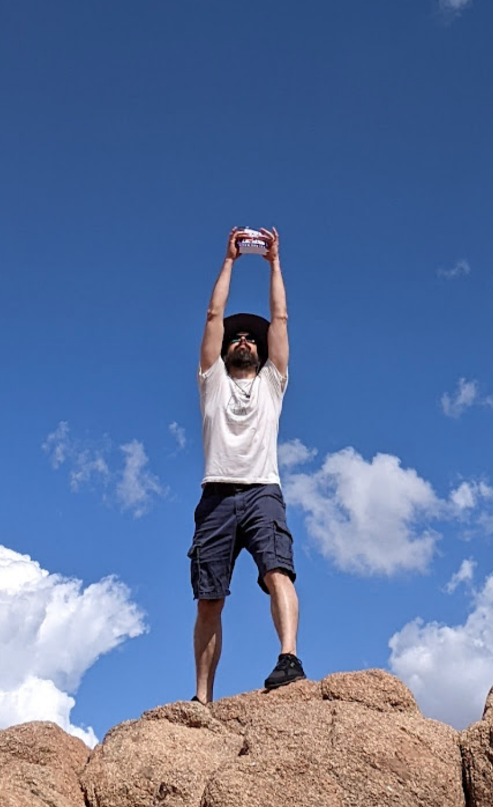

Sadira
Tom Sadira has spent two decades in cannabis — cultivating, operating a dispensary, and working in technology at Leafly — and along the way wrote five scifi comedy novels about a weed grower who gets abducted by aliens and accidentally becomes captain of an enormous living spaceship that runs on THC.

Tom Sadira has worked in cannabis at every level, from seed to screen: as a cultivator, a dispensary operator, and currently at Leafly, where he works on the consumer and data side of one of the industry's most recognized platforms. That trajectory gives him an unusually complete view of how the cannabis world actually functions, from the soil up.
Alongside his industry career, Tom is the author of the Far Out Chronicles — a five-book sci-fi stoner comedy series described as "Star Trek meets Cheech & Chong." The series follows fugative cannabis grower Charlie Hong, whose crop gets stolen by aliens and who accidentally hitches a ride while trying to save it. The books have been compared to Douglas Adams, Matt Dinniman's Dungeon Crawler Carl series, Barry Hutchison's Space Team series, Ernest Cline, Philip K. Dick, Hunter S. Thompson, and Terry Pratchett. The series has built a dedicated following among cannabis culture and science fiction comedy fans.
Author BioTom Sadira is known throughout the multiverse as one of the most accomplished authors of sci-fi and fantasy to have ever spawned in this sector. He’s been published in journals, anthologies, and collections throughout this galactic quadrant, most of which you’ve never heard of, so just forget I mentioned it. Sadly, his homeworld of Earth is one of the last planets to catch on.
He currently writes from the intense solar radiation of Arizona with his lovely wife and three children (all human, probably).
{kind=link}
{kind=link}


All five books also available as the Far Out Five Mega-Omnibus — free on Kindle Unlimited.
Tom is available for podcast interviews, cannabis industry panels, and author appearances. He comes prepared, speaks plainly, and knows the industry from the inside out. Reach out via the HIFI Press contact page.
Get in touch →